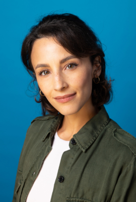
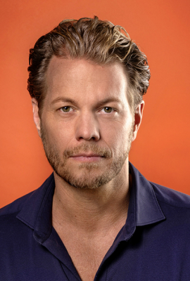
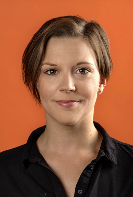
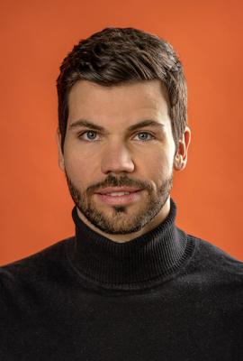
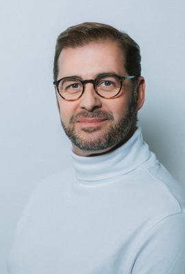
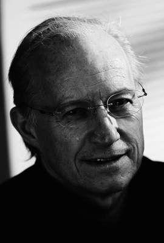
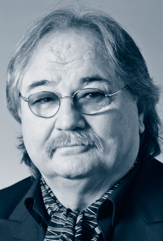
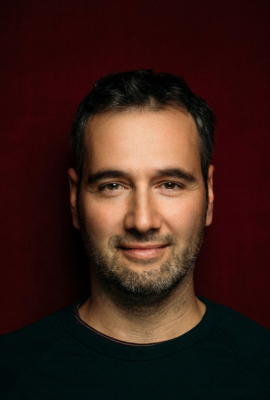
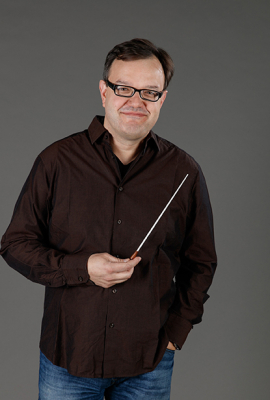

The world hit as a great concert highlight at the original location - the international VBW successful production ELISABETH by the successful duo Michael Kunze & Sylvester Levay as a really great concert experience of the extra class in front of the Schönbrunn Palace! The famous historical setting offers a worthy and unique ambience for the concert version of the musical, which tells the dramatic and touching story about the life, work and suffering of Empress Elisabeth of Austria.
With top-class principals and ensemble, accompanied by the orchestra of the Vereinigte Bühnen Wien, the concert version of the most successful German-language musical of all time will be staged in the original setting in 2022.
Elisabeth - Konzertante Aufführung 2022 - Pressefotos


CAST
Maya Hakvoort
Maya Hakvoort
Dutch-born Maya Hakvoort was trained in classical singing at the Maastricht Conservatory and in musical and acting in Amsterdam. She began her theater work in 1989 with CHICAGO in Belgium/Netherlands.
In Austria she had her breakthrough in 1994 as Elisabeth in the musical ELISABETH. She appeared on stage more than 1.000 times as Austria's parade empress, including in Japan and Trieste, where she enjoyed great success. In the following two and a half decades Maya Hakvoort played numerous leading roles in international productions.
Since 2004, she has been producing successful concert programs with her company "Maya Hakvoort Music Productions" and later musicals.
In 2019 Maya Hakvoort played two grandiose roles as Die alte Belle (Fürth) and Norma Desmond (Bozen) in the hit musicals LITTLE ME and SUNSET BOULEVARD. Later she appeared on stage as the fanatical Margret White in the horror musical CARRIE at the First Stage Theater in Hamburg.
From the end of 2021, she can be seen as Golde in the musical ANATEVKA at Theater Baden.In 2022, Maya Hakvoort will return to her parade role as Empress Elisabeth and can be admired at Schönbrunn Palace in ELISABETH - LIVE IN CONCERT. Before that, however, she will be seen as a witch in her own production INTO THE WOODS, which will be staged at Theater Bruno in Brunn am Gebirge in the summer of 2022.
Maya Hakvoort was awarded the Golden Decoration of Merit of the Republic of Austria in April 2011, the Golden Town Hall Man of the City of Vienna in October 2016 and the Grand Decoration of Honor for Services to the Province of Lower Austria in November 2016. Since the summer of 2021, she has been in charge of the "Floating Concerts" on the old Danube as event organizer and artistic director.
- 
Abla Alaoui
Young Elisabeth
Abla Alaoui
Young Elisabeth
Abla Alaoui completed her training at the Joop van den Ende Academy and was engaged for the role of Mary Robert in SISTER ACT in Oberhausen before she even graduated. This was followed by the European premiere of Frank Wildhorn's BONNIE & CLYDE, for which she created the role of Bonnie. Abla made her Vienna debut in MOZART! at Vereinigte Bühnen Wien, where her roles included Cover Nannerl. Further engagements took her to the Frankenfestspiele as Betty Schaefer in SUNSET BOULEVARD, as well as to the Theater des Westens, where she was engaged again for the role of Mary Robert in the tour production of SISTER ACT, and at the same time to the Stadttheater Bielefeld, where she made a guest appearance as Trix in THE DROWSY CHAPERONE. Afterwards she impersonated the role of Sarah (Cover) in DANCE OF THE VAMPIRES in Vienna, among others. This was followed by Lisa and alternately Sophie in the German, Austrian and Swiss tours of MAMMA MIA! as well as the role of Jenny in the Austrian premiere of Andrew Lloyd Webber's ASPECTS OF LOVE in Vienna. Her most recent performance was as Charlotte Buff in GOETHE! at the Bad Hersfeld Festival in summer 2021.
David Jakobs
David Jakobs
- 
Mark Seibert
The Death
Mark Seibert
The Death
Born in Frankfurt, he received his training at the Lee Strasberg Theatre Institute New York and at the Musik und Kunst Privatuniversität der Stadt Wien. While still a student, he played roles at VBW including Pygar in BARBARELLA and Tybalt in ROMEO & JULIETTE. Afterwards he appeared on stage as Radames in AIDA, Fiyero in WICKED - THE WIZARD OF OZ, Ranger in DER SCHUH DES MANITU, as well as Galileo in WE WILL ROCK YOU. He embodied Death in ELISABETH in Vienna and in parallel Jesus in JESUS CHRIST SUPERSTAR in Bonn and was seen as Lancelot in the world premiere of ARTUS - EXCALIBUR at the Theater St.Gallen as well as again as Death in ELISABETH in Shanghai and on tour in Germany. This was followed by Prince Archbishop Colloredo in MOZART! and the title role in SCHIKANEDER at the Raimund Theater. As Count von Krolock in DANCE OF THE VAMPIRES he appeared on stage in Berlin, Stuttgart and Vienna. In PRETTY WOMAN in Hamburg he could be seen as Edward Lewis. Most recently, he played Robin Hood in ROBIN HOOD - DAS MUSICAL in Fulda and embodied Death in the concert highlight ELISABETH at Schönbrunn 2022 - as he did in 2019.
André Bauer
André Bauer
Daniela Ziegler
Daniela Ziegler
Lukas Perman
Lukas Perman
Lukas Perman received his training at the Mozarteum Salzburg and at the Vienna Conservatory, as an actor and singer. While still a student, he made his debut in the musical ELISABETH at Theater an der Wien in 2003. In 2005 he took on the title role in the German-language premiere of ROMEO & JULIA at the Raimundtheater. This was followed by numerous engagements in leading roles at Vereinigte Bühnen Wien (including TANZ DER VAMPIRE, I AM FROM AUSTRIA) at the Volksoper Wien, Bühne Baden etc. and UMEDA Theater in Japan.
From autumn 2021 he will be seen in "Sound of Music" at the Salzburg Landestheater as Captain von Trapp.
In addition to his stage activities, Lukas Perman has released numerous CDs. As a television presenter, he repeatedly appeared for LICHT INS DUNKEL on ORF, most recently hosting the cultural program "WIR SPIELEN FÜR ÖSTERREICH" on ORF III.
From 2012 - 2015, he completed an MBA in General Management at the Donauuniversität Krems. Since then he has been working as a producer and organizer.
For his artistic work and especially for his social commitment to various national and international aid organizations, Lukas Perman was awarded the "Goldene Ehrenzeichen der Republik Österreich" in 2019.
Hans Neblung
Hans Neblung
Katja Berg
Katja Berg
Philipp Gruber-Hirschbrich
Philipp Gruber-Hirschbrich
Niklas Petzer
Niklas Petzer
Eva Maria Bender
Eva Maria Bender
Ulrike Figgener
Ulrike Figgener
Oliver Floris
Oliver Floris
Oliver Floris trained in musicals at the Bayerische Theaterakademie August Everding in Munich. He went to his first professional tap dance classes at the age of eight, and had already gained his first stage experience in CRAZY FOR YOU and CURTAINS (DEA) at Coburg State Theatre before attending the Academy. He subsequently appeared at the Staatstheater am Gärtnerplatz (JESUS CHRIST SUPERSTAR) and Salzburg State Theatre (THE SOUND OF MUSIC, directed by Andreas Gergen/Christian Struppeck). After playing Feldzieg in THE DROWSY CHAPERONE (directed by Stefan Huber), his most recent role has been the Baker in Stephen Sondheim’s INTO THE WOODS at the Deutsches Theater in Munich.
Ivo Giacomozzi
Ivo Giacomozzi
Tristan Giovanoli
Tristan Giovanoli
Steffi Irmen
Steffi Irmen
- 
Denise Jastraunig
Denise Jastraunig
The native of Lower Austria completed her training at the Performing Arts Studios Vienna. In 2011 she toured Europe with CATS and made her musical debut as Swing, Jellylorum/Griddlebone and Jenny Fleckenreich. This was followed by REBECCA (cover "Ich") and MAMMA MIA! (Ali and Sophie) in Stuttgart. In SHREK - DAS MUSICAL Denise was Assistant Dance Captain, Swing and cover Fiona, in Disney's TARZAN she impersonated Jane among others. In Berlin, she appeared in SISTER ACT as Mary Robert, among others, and in Stuttgart in 2018 she was convincing in the title role of MARY POPPINS. In Hamburg, she appeared on stage in KINKY BOOTS as Nicola, among others. In 2019, her path led her to her homeland, where, after the concert performance of ELISABETH at Schönbrunn, she also appeared in CATS as Swing, Jellylorum/Griddlebone, Jenny Fleckenreich and Grizabella.
Charlotte Katzer
Charlotte Katzer
Maren Kern
Maren Kern
- 
Maximilian Klakow
Maximilian Klakow
Melanie Ortner-Stassen
Melanie Ortner-Stassen
- 
Wolfgang Postlbauer
Wolfgang Postlbauer
Born in Upper Austria, he completed his training at the Stage School in Hamburg. This was followed by engagements in JOSEPH AND THE AMAZING TECHNICOLOR DREAMCOAT, HAIR, as well as EVITA in a touring production, among others. He was seen in ANYTHING GOES, ELISABETH - DIE LEGENDE EINER HEILIGEN, AIDA, EVITA, JESUS CHRIST SUPERSTAR, ARTUS - EXCALIBUR, DAS DSCHUNGELBUCH, DON CAMILLO & PEPPONE, DOKTOR SCHIWAGO, ANNA GÖLDI - DAS MUSICAL and BLUTSBRÜDER. At VBW he has appeared on stage in ICH WAR NOCH NIEMALS IN NEW YORK, ELISABETH, DER BESUCH DER ALTEN DAME and DON CAMILLO & PEPPONE. Tour productions of ELISABETH have taken him to Shanghai, Munich, Essen and Linz.
Veronika Rivo
Veronika Rivo
Martin Rönnebeck
Martin Rönnebeck
Lilly Rottensteiner
Lilly Rottensteiner
Lilly Rottensteiner was born and raised in Styria and graduated with distinction from the Music and Arts University of the City of Vienna. Lilly made her professional debut at the Staatstheater am Gärtnerplatz in the role of Baroness Bomburst in CHITTY CHITTY BANG BANG. Since then, she has appeared on the stage of the Gärtnerplatztheater as Mrs. Segstrom in A LITTLE NIGHT MUSIC, as Herta and Luise in DREI MÄNNER IM SCHNEE and as Flower Girl and Maid in MY FAIR LADY. At the VBW she was part of the ensemble of the semi-concertante productions of JESUS CHRIST SUPERSTAR at the Raimund Theater and of ELISABETH in the courtyard of Schönbrunn Palace. Most recently she played Sara in the world premiere of LIZZY CARBON UND DER KLUB DER VERLIERER at the Theater der Jugend.
Stefan Tolnai
Stefan Tolnai
Wolfgang Türks
Wolfgang Türks
Wietske van Tongeren
Wietske van Tongeren
Born in the Netherlands, started her career at the Theater an der Wien in 2004 as a cover for the title role in ELISABETH, right after completing her training at the Conservatorium in Tilburg. Already in 2006 she was the first cast of Elisabeth in Stuttgart and, back in Vienna, she created the role of Ich for the world premiere of REBECCA at the Raimund Theater. After Cinderella in INTO THE WOODS in Bolzano 2008 she returned to the Raimund Theater for the German premiere of RUDOLF - AFFAIRE MAYERLING in the role of Stephanie. Among other things, she embodied Queen Anna in 3 MUSKETEERS (Tecklenburg, 2010), Ellen in MISS SAIGON (Klagenfurt, 2011), Betty Schaefer in SUNSET BOULEVARD (Bad Hersfeld, 2011; Dortmund, 2016; Bonn, 2017) and Agnés Duchamps in MARIE ANTOINETTE (Tecklenburg, 2012 ). From 2011 to 2013, she appeared as Maria von Trapp in THE SOUND OF MUSIC at the Salzburg State Theater. For the world premiere of ROCKY - DAS MUSICAL in Hamburg, she created Adrian, the female lead, and then played it in Stuttgart. In 2018/19 she appeared on the Vienna couch in the one-woman show BLEIB STCH BIS ZUM SONNTAG and in NAMEN AN DER WAND as well as in Tecklenburg as Tonia in DR. SCHIWAGO. In 2020/2021 she performed the role of Grizabella in the hit musical CATS at the Ronacher and gave the role of Mary Tudor in the German-language premiere of LADY BESS at the Theater St.Gallen in 2021.
Carl van Wegberg
Carl van Wegberg
LEADING TEAM
- 
Michael Kunze
Michael Kunze
Michael Kunze comes from an Austrian family, was born in Prague and grew up in Germany. After studying law and earning his doctorate, he began working as a songwriter. When he was dissatisfied with the production of his songs, he produced them himself. He quickly became a successful songwriter and an internationally known pop producer. Over six hundred chart successes, including two number one hits in America, earned him 79 gold and platinum records, an Echo Lifetime Award and the US Grammy. Stars who owe him hits include Gilbert Bécaud, Peter Alexander, Nana Mouskouri, Gitte Haenning, Peter Maffay, Julio Iglesias and Sister Sledge. He also penned over 100 Udo Jürgens lyrics, including "Griechischer Wein" and "Ich war noch niemals in New York". In addition, he developed lasting TV formats and wrote, among other things, the "Peter Alexander Show" for ORF. In the 1980s, he moved from the recording studio to the theater. Initially, he worked on German adaptations of international musical successes such as EVITA, CATS, DAS PHANTOM DER OPER, Disney's DER GLÖCKNER VON NOTRE DAME, DER KÖNIG DER LÖWEN, MAMMA MIA! and WICKED. He has been developing original musicals since the 1990s. Already with his first work ELISABETH (music: Sylvester Levay), he advanced to become the internationally most performed German-language playwright. His subsequent works TANZ DER VAMPIRE (Jim Steinman), MOZART!, REBECCA, LADY BESS and MARIE ANTOINETTE (all set to music by Sylvester Levay) also became international successes. He is considered the creator of the DramaMusical, a new genre of musical theater. He was the only librettist from the German-speaking world to reach Broadway. His pop oratorios DIE ZEHN GEBOTE and LUTHER (music: Dieter Falk) filled large European halls. In 2017, his work DON CAMILLO & PEPPONE (music: Dario Farina) was shown at the Ronacher. His musical MATTERHORN (music: Albert Hammond), premiered in St. Gallen in 2018, deals with the highly topical subject of the threat to nature posed by man. His works have been and are being performed in Paris, Moscow, Seoul, Shanghai and Tokyo. In addition to musical librettos, he has written several non-fiction books, a play about Bertolt Brecht's wife (LENYA), political cabaret texts for the Munich Lach- und Schießgesellschaft, and the book for the opera RAOUL (music: Gershon Kingsley). In addition, Michael Kunze is the author of scientific treatises and books of legal history. The Göttingen Academy of Sciences honored him for this in 2016 with the Brothers Grimm Medal. He is currently working on a non-fiction book on legal history entitled DAS UNSICHTBARE RECHT. Michael Kunze is a member of the US Dramatists Guild, Inc.
- 
Sylvester Levay
Sylvester Levay
Sylvester Levay was born in Hungary and came to Germany in the early 1960s. From 1963 to 1972 he worked with various orchestras throughout Europe. He moved to Munich and made a name for himself as a composer, conductor, pianist and arranger. While working with stars such as Udo Jürgens, Gitte Haenning, Katja Ebstein, Penny McLean and Donna Summer, he met Michael Kunze. They had their joint international breakthrough in 1975 with the hit "Fly, Robin, Fly", for which they received a Grammy Award in the category "Rhythm and Blues". Other hits followed, such as "Get Up And Boogie" and "Lady Bump." Between 1977 and 1980, Sylvester Levay composed and produced for internationally known artists such as Elton John, Donna Summer and Sister Sledge. As a new challenge, he then concentrated on composing film music. His classical music training and experience as a rock and pop composer made him a sought-after composer in Hollywood within a few years. Sylvester Levay lived and worked in Hollywood for 20 years. During this time, world stars such as George Lucas, Steven Spielberg, Sylvester Stallone, Charlie Sheen and Michael Douglas were among his clients. He is a member of the National Academy of Recording Arts Sciences (NARAS) and the Academy of Television Arts & Sciences (ATAS) and lectured on film composition at the American universities UCLA and USC. In German television productions, Sylvester Levay wrote the music for the "Golden Lion", the "German Television Award", the "Bambi" or the television series "Medicopter 117", among others. In Hollywood, he set the successful series "Airwolf" to music. Since the 1990s, he has created the musicals HEXEN HEXEN, ELISABETH and MOZART! with Michael Kunze. Again he was internationally successful, especially with ELISABETH, which has been performed in 14 countries so far. Commissioned by the Japanese production company TOHO, Sylvester Levay and Michael Kunze created the musical MARIE ANTOINETTE, which premiered in Tokyo in November 2006 and had its German-language premiere in Bremen in 2009. Also in 2006, REBECCA, based on the novel of the same name by Daphne du Maurier, enjoyed great success in Vienna and was subsequently seen in 12 countries. In April 2014, his latest collaboration with Michael Kunze, the musical LADY BESS premiered in Tokyo and was followed in 2016 by his pop musical THE CREST OF THE ROYAL FAMILY. Titled SYLVESTER LEVAY & HIS FRIENDS - THE MUSICALS OF KUNZE & LEVAY IN CONCERT, a series of gala concerts featuring the songs of Sylvester Levay and Michael Kunze were held at the Shanghai Culture Square Theatre in China in September 2019. This was followed by the German premiere of LADY BESS in St. Gallen on February 19, 2022.
Gil Mehmert
Gil Mehmert
- 
Simon Eichenberger
Choreography
Simon Eichenberger
Choreography
Training: Swiss Chamber Ballet in Zurich. Choreographies: among others. DIE 13½ LEBEN DES KÄPT'N BLAUBÄR/Tour; SOUTH PACIFIC, INTO THE WOODS/Staatstheater Kassel; GIGI, POLNISCHE HOCHZEIT/ Oper Graz; KISS ME, KATE/Salzburger Landestheater; DÄLLEBACH KARI, GOTTHELF - DAS MUSICAL, TITANIC (co-director), DER BESUCH DER ALTEN DAME/ Thunerseespiele, Ronacher; DIE SCHWEIZERMACHER/Zurich; REBECCA/St. Gallen, Stage Palladium Theater Stuttgart; CATCH ME IF YOU CAN, LA CAGE AUX FOLLES, WINTER WONDERETTES/Kammerspiele der Josefstadt; DINOSAURIER! - THE MUSICAL, GRIMM! /Theater der Jugend; SEVEN IN HEAVEN (UA), SHOW BOAT, THE WHO'S TOMMY, GRAND HOTEL (ÖEA), IN 80 TAGEN UM DIE WELT (UA, Deutscher Musical Theater Preis 2017)/Landestheater Linz; CANDIDE/Staatsoper Hannover; DAS WUNDER VON BERN (UA, Deutscher Musical Theater Preis 2015)/ Stage Theater an der Elbe; DIE KOMÖDIE DER IRRUNGEN/Salzburger Festspiele; IO SENZA TE (UA)/Zürich; VIKTORIA UND IHR HUSAR/Seefestspiele Mörbisch; WAHNSINN - DAS MUSICAL (UA)/Tour; DIE DREIGROSCHENOPER, DER MANN MIT DEM LACHEN (UA)/Staatsoperette Dresden. Direction and choreography: WEST SIDE STORY/Staatstheater Schwerin; ROCKY HORROR SHOW/Zwingenberger Schlossfestspiele; FOREVER YOUNG/Landestheater Linz; DAS DSCHUNGELBUCH (UA)/Luisenberg Festspiele; KNIE - DAS CIRCUS MUSICAL (UA)/Switzerland. Most recently directed DER KÖNIG UND ICH/Seefestspiele Mörbisch.
Yan Tax
Yan Tax
Yan Tax studied fashion design at the Academy of Fine Arts in Breda. His credits at theatres in the Netherlands include CYRANO DE BERGERAC, JOE, ELISABETH, CISKE DE RAT and SUNSET BOULEVARD. He was costume designer for ELISABETH, MOZART!, TITANIC, 3 MUSKETEERS and ICH WAR NOCH NIEMALS IN NEW YORK in Germany and Austria, and for TINTIN and DAENS in Belgium. Yan Tax has designed costumes for productions by the Amsterdam Theatre Group, the National Theatres of Brussels and Amsterdam, and for numerous operas in places as far-flung as Paris, Berlin, Dresden, Berne, Zurich, Florence, Sydney, San Francisco, Vienna, Frankfurt and Helsinki. He was also costume designer for the Dutch TV series “Willem van Oranje” and “Wilhemina” and for films like “Wings of Fame”, “Spetters”, “Left Luggage”, “Discovery of Heaven” and “Black Book”. In Belgium and France, he designed costumes for DAENS, ELINE VERE, LE HUITIÈME JOUR, MINA TANNENBAUM and LA CHAMELLE. He was nominated for a Tony in New York for his outstanding work on CYRANO DE BERGERAC and won the EuropaCinema Award for Best Costume Designer. In Germany, he won awards for Best Costumes in 2000, 2001, 2003 and 2004 for ELISABETH, MOZART!, TITANIC – THE MUSICAL und 3 MUSKETEERS. In 2008, he was nominated for a Lola for “Black Book” and in 2014, he won the Austrian Musical Theatre Award for the 20th anniversary production of ELISABETH at the Raimund Theater. After collaborating with director Harry Kupfer on the hugely successful production of DER ROSENKAVALIER at the Salzburg Festival in 2014, Yan Tax went on to work with him on MOZART!, then on PARSIFAL in Tokyo, DIE MEISTERSINGER VON NÜRNBERG in Helsinki and A LIFE FOR THE TSAR in Frankfurt.
Michael Grundner
Michael Grundner
Michael Grundner trained in Vienna, London and New York. His most recent credits include LES MISÉRABLES, TOMMY and INTO THE WOODS at the Landestheater Linz, LA CAGE AUX FOLLES at the Theater in der Josefstadt in Vienna, JESUS CHRIST SUPERSTAR at the Raimund Theater in Vienna, CATCH ME IF YOU CAN at the Theater in der Josefstadt in Vienna, the Staatsoperette Dresden and the Deutsches Theater in Munich, TOSCA and AIDA at the Opernfestspiele St.Margarethen, FLASHDANCE and WEST SIDE STORY at the Theater St.Gallen and FLASHDANCE and SATURDAY NIGHT FEVER in Amstetten. He is the lighting and video designer for all José Carreras’s gala concerts. In 2014, he won Best Lighting Designer for FLASHDANCE.
- 
Michael Römer
Michael Römer
After studying in Bremen, Hanover and New York, he worked as a music educator, chamber musician, concert pianist and conductor. This was followed by solo performances with various orchestras and as a partner in chamber music ensembles, as well as recitals with soloists from various state operas; also with a focus on modern music (including collaboration with Karlheinz Stockhausen). As a conductor and répétiteur, he has worked on over 50 different (premiere) performances and premieres in Vienna and abroad. He has also been a guest lecturer at several musical schools and universities. Since the 2000/2001 season, he has been a permanent conductor at the Vereinigte Bühnen Wien, where he has been in charge of the rehearsals of numerous plays as well as the ongoing productions. In addition, he works as a pianist and consultant for many national and international auditions. Currently he is part of the music direction of the VBW. Most recently, he was Musical Director of WE ARE MUSICAL, the opening gala of the Raimund Theater and the concert performances of ELISABETH at Schönbrunn (2019 and 2022). As a supervisor, he oversees versions of ELISABETH, MOZART! and REBECCA in many countries for VBW, among others. In 2022/23, he will follow with the musical direction of Disney's THE HUNCHBACK at the Ronacher.